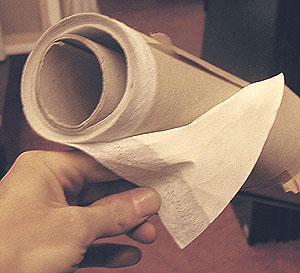

Les
toiles synthétiques
|
Écrire un article sur ce sujet, c'est forcément entrer dans une
polémique.
Le reproche le plus "consensuel" qui est fait aux toiles
synthétiques, c'est leur âge : elles sont trop récentes pour que l'on puisse
augurer de leur comportement lors du vieillissement. Ce n'est pourtant pas le
seul que l'on peut leur faire, à tort ou à raison, mais non sans arguments.
Présentation
|
Sommaire
Présentation
Les nylons
La Polytoile ®
Synthèse |
Il est à peu près admis que les toiles synthétiques se prêtent
parfaitement à certaines types
de travaux (lire la synthèse en fin de page).
Par ailleurs, nous refusons de nous faire l'écho favorable du bruit selon
lesquels le synthétique aurait été "mis en retrait", minoré dans
l'intérêt de l'industrie textile (penser que les agriculteurs russes, premiers
producteurs de lin à tisser, n'ont sûrement pas l'influence économique
planétaire de sociétés géantes telles que Dupont de Nemours dont le nylon
n'est qu'une des activités). De toutes manières, ces produits ne sont même pas
comparables. Cette opinion ne paraît donc pas crédible.
Les toiles synthétiques se répartissent en deux familles :
Les nylons
Il s'agit en fait de polyamides divers
(parmi lesquels le vrai Nylon ®, marque déposée, Dupont de Nemours) aux caractéristiques
variées dont les points communs sont
* une grande résistance aux tractions (à la cassure, au déchirement)
rendue possible par une élasticité notable
* l'absence de réaction à l'eau.
Leur élasticité est a priori un inconvénient qui peut faire douter
de leur aptitude à être tendus sur châssis, mais ce défaut serait compensé
(annulé ?) par leur insensibilité à l'eau. C'est-à-dire que l'on peut
supposer qu'une toile de nylon tendue ne sera pas altérée par des variations
atmosphériques, ce qui est un avantage majeur, mais uniquement sous l'effet
d'actions mécaniques.
Qu'en est-il lorsque des sollicitations mécaniques extérieures ont lieu ?
Par exemple : imaginons, dans une exposition, un visiteur indélicat qui, voulant
montrer un détail, appuie en un point du tableau avec son doigt. Le nylon,
étant élastique, ne s'opposera pas à la pression. C'est la couche de peinture
qui l'encaissera. Problème : la peinture sèche n'est pas toujours très
élastique !
C'est pour ce genre de raisons que des générations de peintres ont
préféré les toiles végétales les moins élastiques (lin, chanvre). Les
problèmes liés aux réactions thermiques et hygrométriques ne sont pas
les seuls arguments pour la préférence d'une fibre. Le transport et la mise en
exposition notamment suscitent des chocs mécaniques sources de la majorité
des accidents, ce dont tout restaurateur ou conservateur peut témoigner.
La peinture acrylique, particulièrement souple et
élastique, semble convenir particulièrement à ce support.
La Polytoile ® (Lefranc
& Bourgeois)

C'est un corps "intissé" (non tissé) à base de fibres de polyester
projetées, pressées, soudées, collées. Au toucher, elle ressemble assez à
du papier. Son grain est extrêmement fin.
Comme le montre la photo ci-contre, elle aurait tendance à marquer les pliures,
les lunes et les chocs (fibres trop longues
?) et doit pour cette raison être impeccablement roulée et protégée pour
le transport et le stockage.
Il pourrait être judicieux, dans certains cas, de maroufler préalablement cette
toile sur support dur (bois, mur)...
Merci de nous faire part votre
expérience de ce support.
Le témoignage récent d'un professionnel nous autorise à écrire que si cette
toile rend de très précieux services et constitue manifestement un outil de
qualité (fait confirmé par ailleurs), elle pourrait avoir le petit défaut de ne
pas se retendre après un enfoncement. Cet inconvénient pourrait être compensé
par une réparation simple.
Synthèse
Il est permis d'émettre certaines réserves sur les synthétiques à cause
de leurs propriétés mécaniques potentiellement dangereuses pour les peintures épaisses
et assez peu élastiques telles que les huiles empâtées. Par contre, collées - et non tendues - elles
pourraient être supérieures à certains points de vue aux fibres végétales
quelle que soit la peinture utilisée.
Leur emploi actuel est surtout lié aux métiers du graphisme, mais ceci ne
doit pas inciter les artistes travaillant dans d'autres domaines à délaisser ces
supports.
Retour
début de page